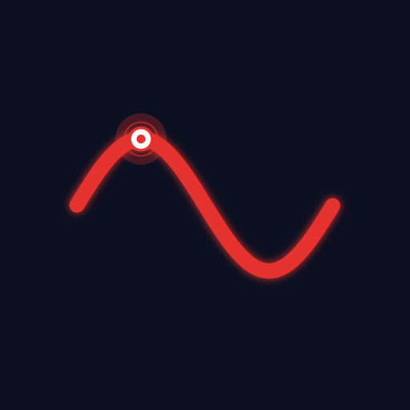
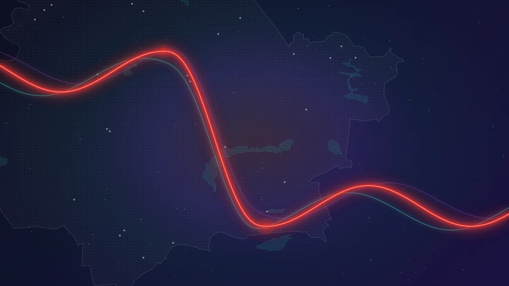
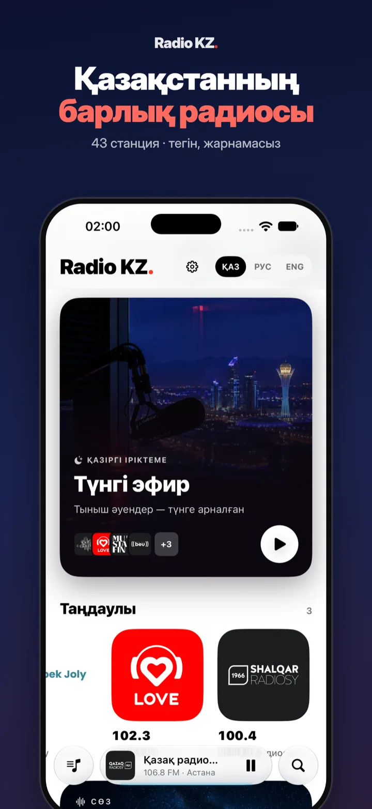
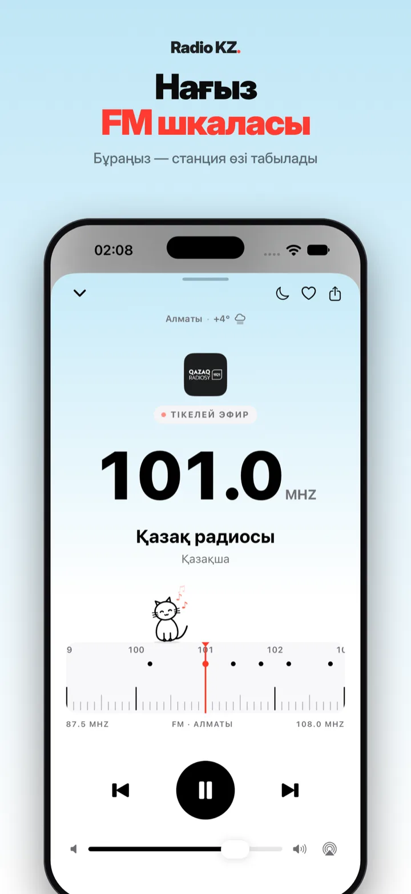
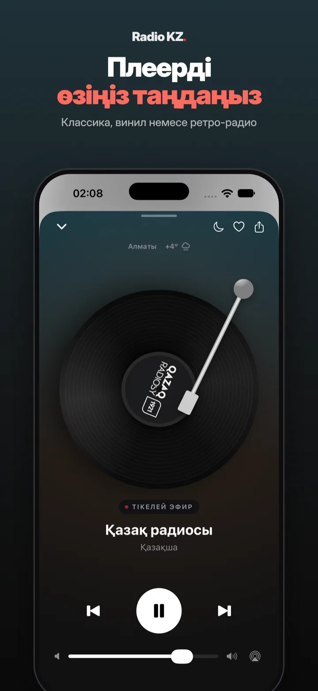
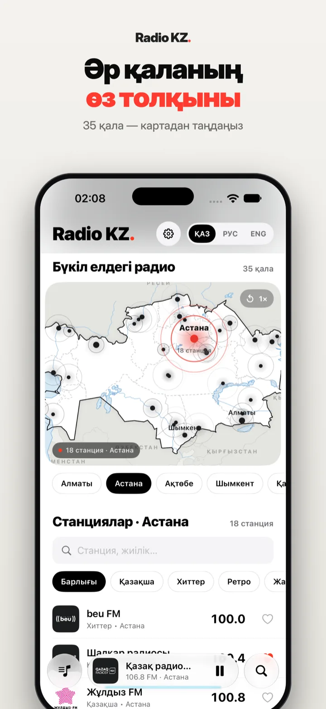
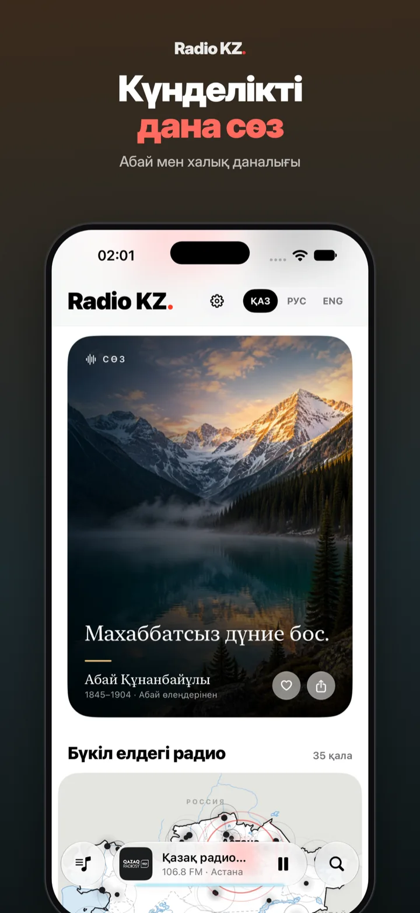
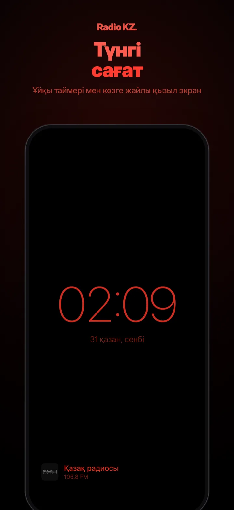

40+ радиостанций · 35 городов · бесплатно · без рекламы
Плавная настройка по FM-шкале, мягкий тактильный отклик и мгновенный чистый звук станций Казахстана.
Огни ночного мегаполиса оживают в ритме радиоволны. Интерфейс плавно подстраивается под время суток.
Когда город зажигает фонари, радио становится главным спутником ночных поездок и вечерних мыслей. Неоновая подсветка волны реагирует на звук и создаёт ощущение живого присутствия в родном городе.
От Каспийского моря до Алтая. Переключайтесь между городами и слушайте локальные эфиры в любой точке планеты.

Так выглядит Radio KZ на iPhone.






Радио объединяет музыку и смысл. Во время прослушивания открывайте вдохновляющие строки классиков казахской литературы.
Создано специально для iPhone с вниманием к каждой детали и плавной работой.
Компактное приложение живёт прямо в строке меню macOS. Управляйте звуком не отрываясь от работы: горячими клавишами или кликом по панели.
Radio KZ создано с уважением к слушателю. Никаких баннеров, видеорекламы перед запуском, трекеров геолокации или платных подписок. Только чистое радио.
Загрузите Radio KZ прямо сейчас в App Store и оставайтесь на одной волне с Казахстаном.